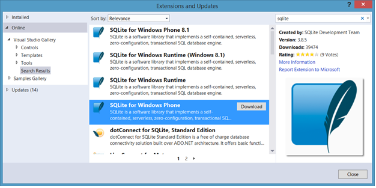
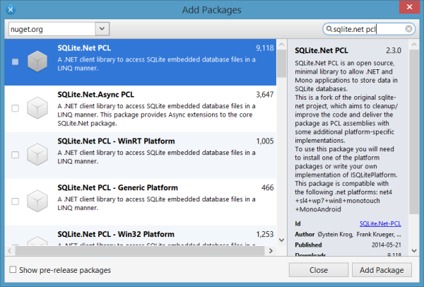
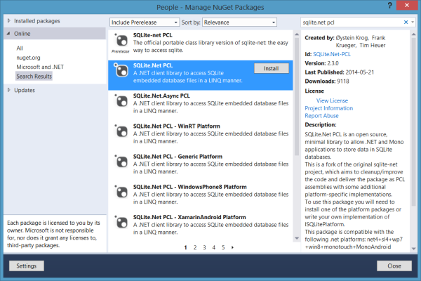

Exercise 2: Adding SQLite.Net to your projects
Duration
10 minutes
Lab goals
The goal of this exercise is to configure your development environment so that you can use SQLite within your Android, iOS, and Windows Phone projects. The high level steps to perform this in both Xamarin Studio and Visual Studio are listed below.
- Windows Phone only: Install the SQLite for Windows Phone Extension.
- Add the platform-independent SQLite.Net PCL to the People Portable Class Library.
- Add the platform-specific implementation of the SQLite.Net PCL to each platform-specific project.
Development Environment Notes
Xamarin Studio on the Mac
Windows Phone is not a supported platform. Please work with the iOS and/or Android platforms only.
Visual Studio on Windows
Visual Studio 2013 Update 3, with the Windows Phone SDK, is required to follow along with the steps in the lab.
To verify whether or not the Windows Phone SDK is installed in your development environment, go to Control Panel >
Programs and Features. Select Microsoft Visual Studio 2013 in the list, and select the Change button.
In the Visual Studio installation dialog, select the Modify button. If the Windows Phone 8.0 SDK list item
does not contain a checkmark beside it, select it and click Update to install the SDK.

iOS development will require a Mac to build and run. If you do not have a Mac available, please work with the Android and/or Windows Phone platforms only.
Required assets
The Part 02 Resources folder contains a subfolder named Part02_Start which contains a solution you will use to perform this lab. Alternatively, you can use the completed solution from the last exercise. The resources folder also contains a completed solution named Part02_Completed you can examine to check your work. Please make sure you have these folders before you begin.
Exercise challenge
Follow the above goals to complete the exercise. You can refer to the step-by-step instructions below to get more detailed information on each goal.
Steps
Below are the step-by-step instructions to implement the exercise.
Install the SQLite for Windows Phone Extension
Since SQLite is not available by default on Windows, an extra step is required in Visual Studio to install the necessary SQLite native library on your Windows machine, which will in turn allow you to easily package SQLite with your Windows Phone apps. The SQLite for Windows Phone extension only needs to be downloaded and installed once per machine (not per project); however, you must always remember to include the SQLite extension as a reference within your Windows Phone projects.
- Launch Visual Studio, then select Tools > Extensions and Updates...
- In the Extensions and Updates dialog, select the Online > Visual Studio Gallery node. Type sqlite within the search field and hit the Enter key.
-
Locate the SQLite for Windows Phone extension within the search results and click Download.
Tip: If the SQLite for Windows Phone extension is not being returned within the search results, verify that your Visual Studio development environment is configured properly. If you are still unable to retrieve the extension in the Extensions and Updates search results, use Google Chrome or Mozilla Firefox to download the sqlite-wp80-winrt-3080600.vsix extension from the SQLite Download page. Do not use Internet Explorer, as it will download the file as a ZIP. Once the VSIX file is downloaded, double-click on it to launch the installation.This action will launch the VSIX Installer which displays the license terms, and indicates the extension will be installed to a Global Location. Click Install to continue. Restart Visual Studio when prompted. 
- Once Visual Studio has restarted, open the People solution contained within the Part02_Start folder.
- Right-click the References node within the Windows Phone project and select Add Reference... Click on the Windows Phone SDK > Extensions node, and select the SQLite for Windows Phone extension to add it to the project. This will add the native SQLite library (sqlite3.dll) to the project.
-
Select Build | Configuration Manager... from the menu. In the Build Configuration Manager dialog,
select x86 or ARM as the target platform of your Windows Phone project, in order to be able to build your project
with SQLite.
Note: Use x86 when testing the Windows Phone project in the Emulator, and ARM when testing on the actual device. - Build your solution to verify it will compile.
Add the platform-independent SQLite.Net PCL to the People Portable Class Library.
-
If you are using Xamarin Studio, right-click the Packages folder in the People Portable Class Library project and select
Add Packages... from the popup menu. In the Search field, enter
sqlite.net pcl. Select the SQLite.Net component in the list, and add it to the project.  If you are using Visual Studio, right-click on the People Portable Class Library project name within Solution Explorer, select Manage Nuget Packages..., and select the Online node. Entersqlite.net pclin the Search field. Select the SQLite.Net package in the list and install. Ensure you select the proper SQLite.Net package, and not the one marked as Prerelease as shown below. 
Add the platform-specific implementation of the SQLite.Net PCL to each platform-specific project.
- Android: Use the same steps as above to launch Nuget Package Manager for your Android project. Enter sqlite-net android in the search field. In the search results, select the SQLite.Net PCL - XamarinAndroid Platform Nuget package and click Install. Once the Nuget package has installed successfully, close the Nuget Package Manager dialog.
- iOS: Use the same steps as above to launch Nuget Package Manager for your Android project. Enter sqlite-net ios in the search field. In the search results, select the SQLite.Net PCL - XamarinIOS Platform Nuget package and click Install. Once the Nuget package has installed successfully, close the Nuget Package Manager dialog.
- Windows Phone: In Visual Studio, right-click on the People.WinPhone project, and perform the same steps as above to launch the Nuget Package Manager. Type in sqlite-net wp8 in the search field, and hit Enter. In the search results, select the SQLite.Net PCL - WindowsPhone8 Platform Nuget package and click Install. Once the Nuget package has installed successfully, close the Nuget Package Manager dialog.
Summary
In this lab, you installed the SQLite for Windows Phone extension on your Windows machine, and added it as a reference to your Windows Phone project. You also used Nuget Package Manager to install the platform-independent SQLite.NET PCL to a Xamarin.Forms Portable Class Library, as well as the platform-specific SQLite.NET implementations to your Android, iOS, and Windows Phone projects.